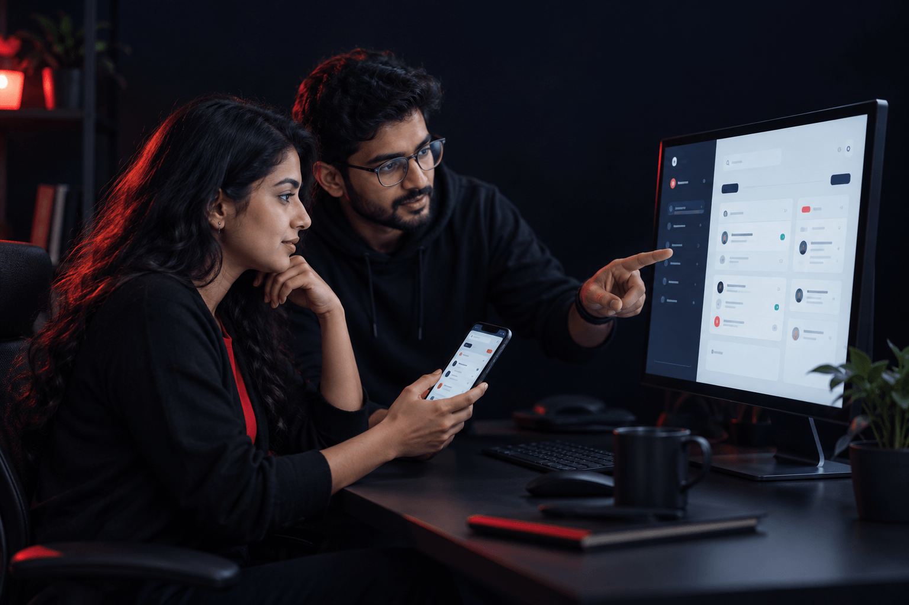

Sales enablement
Real Foods
A digital sales presentation bringing the product portfolio and brand story into one structured journey.
Explore Real FoodsApp & Web Application Development
Build something people can use, not just visit. We connect product thinking, UX and development to create web apps, portals and dashboards around your business needs.
Discuss your ideaWeb apps · Portals · Dashboards · Integrations

Selected application work
Explore applications that help teams present, audiences participate and customers find the right product.
Sales enablement
A digital sales presentation bringing the product portfolio and brand story into one structured journey.
Explore Real Foods
Employee engagement
An IPL contest application with participation-led content and a leaderboard tracking daily and weekly winners.
Explore WHSmith
Product discovery
A guided experience connecting individual hair-care needs with a relevant product recommendation.
Explore VatikaWhat we build
Turn a business need into a useful digital experience, with the right features for your users and the systems behind them.
Bring your idea to life
Create a browser-based product around a clear user need, from an initial release to a more developed experience.
Connect your people
Give customers, partners or employees a shared place to access information, complete tasks and manage requests.
Make work clearer
Bring relevant information and everyday actions together, helping teams understand what needs attention and what comes next.
Join up the systems
Connect your application with the services it relies on, reducing disconnected processes and repetitive data entry.
Features, integrations, hosting and ongoing support are agreed during scoping. Third-party access and service costs are identified upfront.
How we work
Define the right first release, make the journey clear and build with review points along the way.
Understand your users, goals and existing systems. Agree the essential features, dependencies and scope for the first release.
Map the user journeys and create interface prototypes. Review key tasks together before moving into development.
Build the agreed features and integrations in reviewable stages, checking functionality and keeping decisions visible to your team.
Test the core journeys, resolve agreed issues and prepare deployment and handover, with ongoing support defined in the scope.
Why Madverse
Product thinking, design and development working together around the people who will use what we build.
We focus the first release on real user tasks and business priorities, giving each feature a clear reason to exist.
User journeys and technical decisions inform each other, connecting the interface with the way the product actually works.
Existing tools, data flows and integration requirements are considered early, so the application fits the wider business.
Agreed milestones, documentation and handover responsibilities keep your team involved and help you plan what comes after launch.
Frequently asked questions
Practical answers to help you plan your product, from the first brief to life after launch.
Share the problem you want to solve, who will use the product and your budget and timeline. Existing workflows, reference tools and system details help us define the first release.
Yes. We can prioritise the essential user journeys for a focused first release, with additional features planned for later phases based on feedback and business needs.
They depend on the features, integrations, design complexity and testing requirements. We agree scope and milestones before development; changes are reviewed for their cost and schedule impact.
Responsive web interfaces are planned around the agreed devices and browsers. Native iOS or Android apps are a separate requirement to discuss during scoping.
We assess available APIs, permissions and data requirements before confirming integrations. Third-party limitations, subscriptions and access dependencies are identified as part of the scope.
We agree acceptance criteria and review stages, test the core journeys and allow for user acceptance testing before launch. Security and performance testing requirements are defined for the project.
The proposal defines source-code access, documentation, deployment details and account responsibilities. Third-party components and licences are identified separately so the handover is clear.
Hosting, maintenance and post-launch support can be scoped alongside the build. Coverage, response expectations and future enhancements are agreed explicitly rather than assumed to be included.
Have a question about your idea? Start a conversation
An idea to develop,
a workflow to simplify or
a product ready for its next chapter?